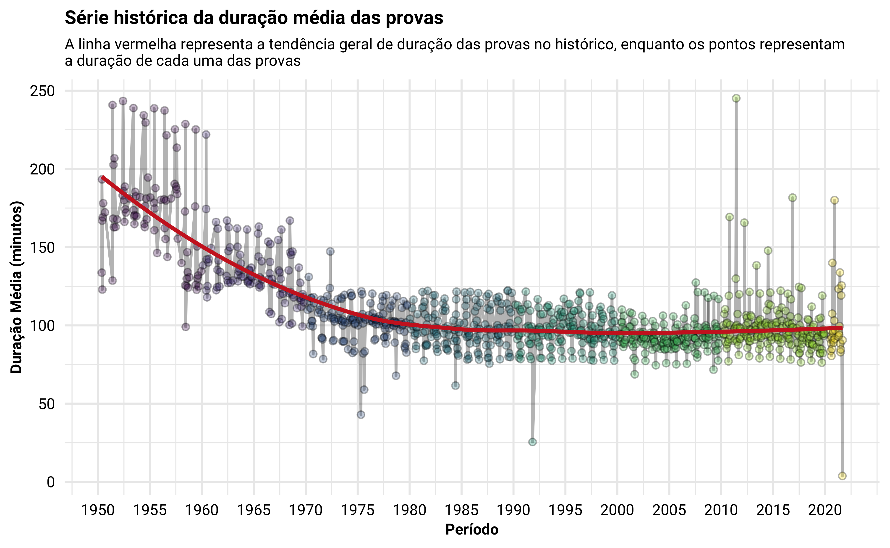
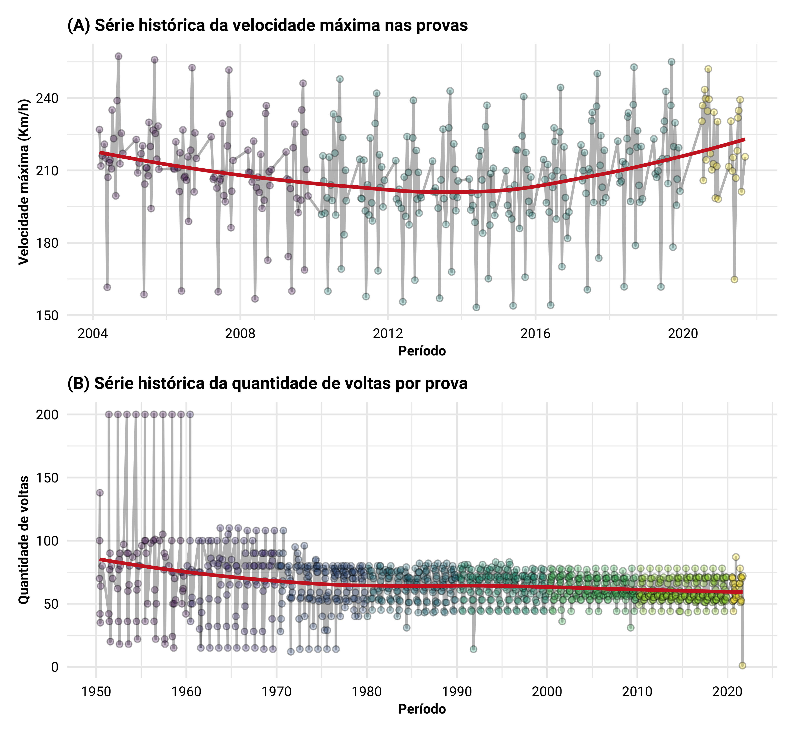
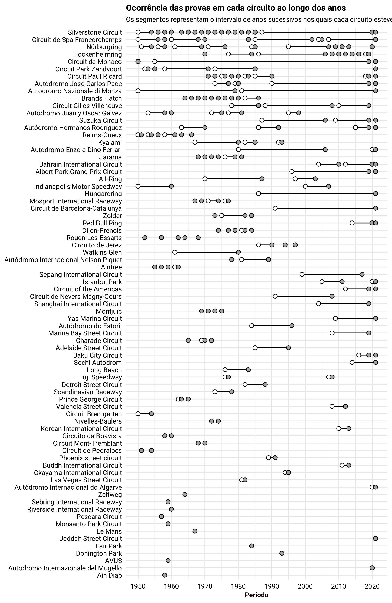
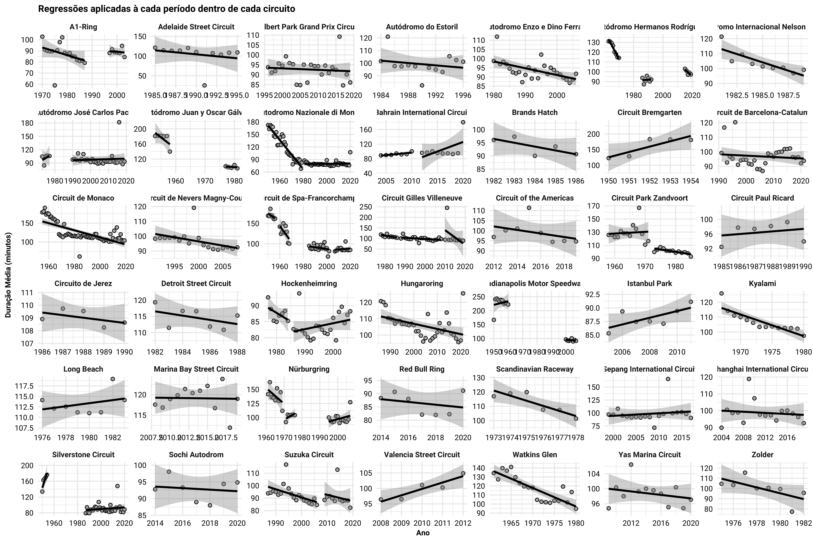
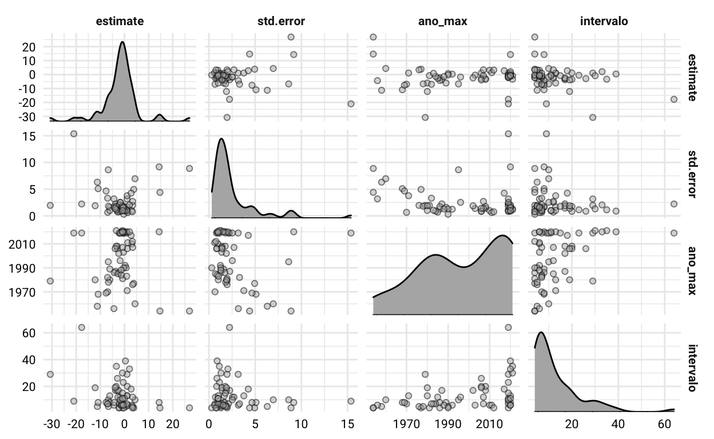
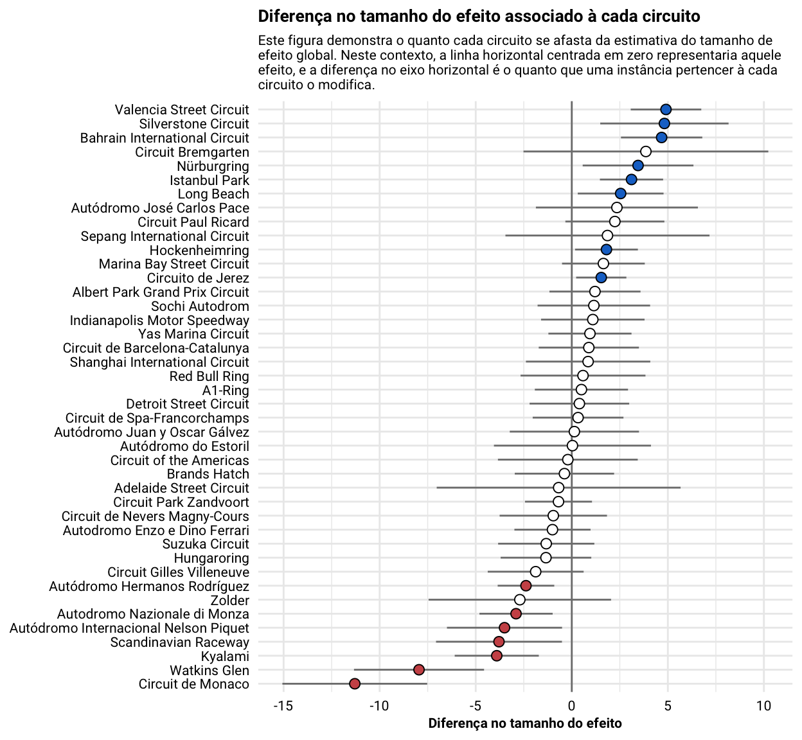
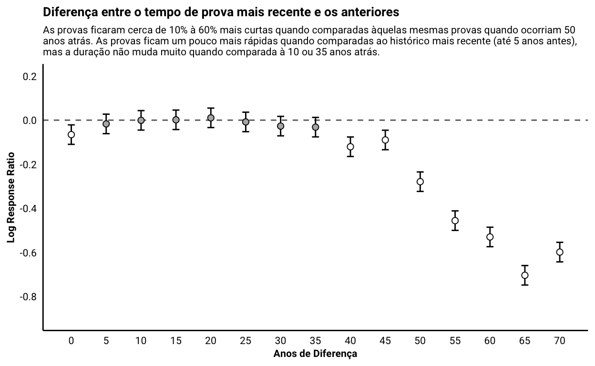

A Fórmula 1 é um dos esportes de velocidade mais famosos do mundo, com provas ocorrendo desde o início da década de 50 até os dias de hoje. Muita coisa mudou nestes 70 anos, especialmente os carros: cada vez mais bonitos, mais seguros e mais rápidos. Mas será que isso também se traduziu em provas cada vez mais curtas também? Neste post eu examino de que forma a duração das provas da Fórmula 1 têm evoluído ao longo das temporadas.
A Fórmula 1 é um dos esportes de velocidade mais famosos do mundo, com provas ocorrendo desde o início da década de 50 até os dias de hoje. Com um histórico tanto grande desses, com provas tão intrincadas, tantas montadoras, pilotos e acontecimentos, é de se imaginar também que uma enorme quantidade de dados tenham sido gerados em cada prova. Seguindo esta ideia, existe um site que hospeda este registro histórico, e que foi o tema de um #TidyTuesday recentemente. Achei os dados disponíveis bastante interessantes e, como (toda) pessoa interessada em dados, logo comecei a pensar sobre os tipos de perguntas que poderiam ser respondidos olhando para eles. Mas antes de seguir essa estória, vamos baixar os dados do repositório oficial do TidyTuesday (ou usá-los localmente se você já o tiver baixado).
# carregando os pacotes necessários
library(tidyverse) # core
library(fs) # manipular paths
library(lubridate) # trablhar com datas
library(ggforce) # extender o ggplot2
library(broom) # wrangling dos resultados da regressão
library(metafor) # para a meta-análise
library(reactable) # tabelas reativas
library(sparkline) # embedar widgets
library(patchwork) # compor figuras
library(tidytuesdayR) # ler os arquivos do tidytuesday
# carregando todos os dados a partir do github do tidytuesday
# se você quiser baixar os dados direto da fonte é só descomentar
# como existe um limite de requests que podem ser feitos ao site, resolvi
# deixar aqui só para referência mesmo
# tt_dataset <- tt_load(x = 2021, week = 37)
# carregando a copia local dos dados
## extraindo os paths das copias locais
paths_copias_locais <- dir_ls(path = 'data/')
# paths_copias_locais <- dir_ls(path = '_posts/2021-09-06-f1-tempos-de-prova/data/')
## criando vetor de nomes dos arquivos
nomes_arquivos <- paths_copias_locais %>%
path_file() %>%
path_ext_remove()
## carregando os arquivos em uma lista
tt_dataset <- map(.x = paths_copias_locais, .f = read_rds)
## renomeando os elementos da lista
names(tt_dataset) <- nomes_arquivos
Uma das primeiras coisas que me ocorreram é que ao longo do tempo a tecnologia do setor automobilístico avançou bastante, levando ao desenvolvimento de motores cada vez mais performáticos e potentes. Não só os motores em si devem ter melhorado, mas todas as outras partes dos carros sofreram alterações no intuito de melhorar a sua aerodinâmica e fornecer mais vantagens aos pilotos que os conduzem - seja em termos de manobrabilidade, velocidade, aceleração ou segurança. Neste contexto, eu esperaria que as provas da Fórmula 1 ficassem cada vez mais curtas com o passar dos anos, certo? Então, a primeira coisa que fiz foi montar um histórico com a evolução da duração das provas ao longo dos anos.
Como primeiro passo para construir este histórico precisei combinar duas tabelas que estão disponíveis junto aos dados - tt_dataset$results e tt_dataset$status. Fiz isso pois a primeira tabela traz o tempo de conclusão de prova de cada piloto, enquanto a segunda tabela é um de-para que nos permite mapear quais pilotos concluíram ou não cada uma delas. Usei esta informação para filtrar a primeira tabela e extrair o tempo de prova (em minutos) de cada piloto que as concluiu. Com base nessa informação, então, calculei o tempo de duração de cada prova como a média do tempo entre todos os pilotos, bem como o desvio padrão deste valor e a quantidade de observações nas quais se baseiam estas estimativas.
## adicionando o dicionario com o de-para do statusId
resultados <- left_join(x = tt_dataset$results,
y = tt_dataset$status,
by = 'statusId')
# criando base com o minimo, media e maximo dos tempos de cada prova
tempos_de_prova <- resultados %>%
# pegando apenas os pilotos que concluiram a prova
filter(status == 'Finished') %>%
# removendo qualquer valor na coluna milliseconds que não contenha pelo menos um número
filter(str_detect(string = milliseconds, pattern = '[0-9]')) %>%
# parseando a coluna de milliseconds para numerico
mutate(
milliseconds = parse_number(milliseconds),
# calculando a quantidade de tempo em horas
minutos = (milliseconds / 1000) / 60
) %>%
# agrupando pela prova
group_by(raceId) %>%
# pegando o valor minimo, medio e maximo dos tempo de prova
summarise(
media = mean(minutos, na.rm = TRUE),
erro = sd(minutos, na.rm = TRUE),
obs = n()
)
## criando a tabela para a visualização
tempos_de_prova %>%
# passando para caracter só para facilitar o plot da tabela
mutate(raceId = as.character(raceId)) %>%
reactable(striped = TRUE, highlight = TRUE, compact = TRUE,
columns = list(
media = colDef(name = 'Duração média (min)', format = colFormat(digits = 2)),
erro = colDef(name = 'Desvio padrão', format = colFormat(digits = 2)),
obs = colDef(name = 'Observações')
),
defaultColDef = colDef(align = 'center',
footer = function(values) {
if (!is.numeric(values)) return()
sparkline(values, type = "box", width = 100, height = 30)
})
)
Como podemos ver na figura abaixo, existe uma tendência forte de queda no tempo de duração das provas até a década de 70 e, então, uma desaceleração desta tendência. Além disso, parece haver uma certa variância nesta série temporal ao longo da última década, inclusive com um aparente aumento nos tempos de prova. Isso acabou me surpreendendo, uma vez que a minha expectativa era de que as provas estariam ficando mais curtas. Mas o que será que poderia estar ocorrendo?
tempos_de_prova %>%
# juntando com as informacoes da data de ocorrência de cada prova
left_join(y = select(tt_dataset$races, raceId, date),
by = 'raceId') %>%
mutate(
# parseando a data para date
data = as_date(x = date),
# extraindo o ano do objeto de data
year = year(x = data),
# calculando a decada onde ocorreu cada prova
decada = (year %/% 10) * 10,
# passando a decada para caracter, pois quero que o mapeamento de cores
# seja feito usando uma escala discreta, e não contínua
decada = as.character(decada)
) %>%
# criando a figura do historico de tempos de prova
ggplot(mapping = aes(x = data, y = media)) +
geom_line(alpha = 0.3, size = 0.7) +
geom_point(mapping = aes(fill = decada),
shape = 21, size = 1.5, alpha = 0.3, color = 'black', show.legend = FALSE) +
geom_smooth(se = FALSE, color = 'firebrick3', method = 'loess') +
scale_x_date(breaks = seq.Date(from = as.Date('1950-01-01'), to = as.Date('2021-12-01'), by = '5 years'),
labels = seq(from = 1950, to = 2020, by = 5)) +
scale_fill_viridis_d() +
labs(
title = 'Série histórica da duração média das provas',
subtitle = 'A linha vermelha representa a tendência geral de duração das provas no histórico, enquanto os pontos representam\na duração de cada uma das provas',
x = 'Período',
y = 'Duração Média (minutos)'
) +
theme(legend.position = 'none')

Eu esperaria que a duração das provas permanecessem relativamente estáveis em pelo menos duas condições. A primeira delas é no caso dos carros não estarem ficando mais rápidos ao longo dos anos. Não dá para avaliar isso tão bem com os dados que estão disponíveis, uma vez esta informação (i.e., fastestLapSpeed) só passou a ser registrado de forma consistente a partir de 2004 (painel A na figura abaixo). Esta série até mostra que a velocidade andou baixando um pouquinho na última década, mas precisávamos mesmo é ver como eram as velocidades lá para trás, quando a série temporal dos tempos de conclusão passou a ficar mais flat.
A segunda coisa que me ocorreu seria o caso onde houvesse uma mudança sistemática na quantidade de voltas em cada prova, que refletisse aquele mesmo padrão da duração das provas. Embora o painel B da figura abaixo mostre que existe alguma semelhança entre as duas séries temporais, podemos ver que a variância na quantidade de voltas pareceu ficar bem mais tamponada ao longo do tempo. Além disso, a queda observada ao longo das primeiras décadas não é tão forte quanto àquela observada na outra série temporal. Finalmente, ainda que a mesma quantidade de voltas em cada prova sejam dadas hoje e no passado, não me parece razoável acreditar que a velocidade dos carros não variou em nada neste mesmo período. Claro, pode sempre ter alguma regra da FIA que defina alguns padrões que segurassem aqueles comportamentos, mas algo não parece fechar.
## mapeando a velocidade maxima por prova
velocidades_por_prova <- resultados %>%
# parseando a velocidade para numerico
mutate(fastestLapSpeed = parse_number(fastestLapSpeed)) %>%
# extraindo a velocidade maxima por prova
group_by(raceId) %>%
filter(fastestLapSpeed == max(fastestLapSpeed, na.rm = TRUE)) %>%
ungroup %>%
# garantindo que temos valores unicos por prova
distinct(raceId, fastestLapSpeed)
## calculando a quantidade de voltas em cada prova
voltas_por_prova <- resultados %>%
# considerando apenas os pilotos que concluiram cada prova
filter(status == 'Finished') %>%
# selecionando as colunas de interesse
select(raceId, laps) %>%
# pegando o valor maximo da quantidade de voltas por prova
group_by(raceId) %>%
summarise(laps = max(laps))
## mapeando cada circuito à uma prova
provas <- left_join(x = tt_dataset$races,
y = tt_dataset$circuits,
by = 'circuitId') %>%
# removendo URL da wikipedia
select(-contains('url'), -circuitRef, -circuitId, -round, -time) %>%
# renomeando o nome do GP e do circuito
rename(gp = name.x, circuit = name.y, data = date)
## juntando informacoes
features_por_prova <- provas %>%
## juntando de voltas por prova
left_join(y = voltas_por_prova, by = 'raceId') %>%
## juntando velocidades por prova
left_join(y = velocidades_por_prova, by = 'raceId') %>%
## adicionando decada à tabela
mutate(decada = (year %/% 10) * 10)
## criando figura do historico de velocidade por prova
fig1 <- features_por_prova %>%
select(data, decada, fastestLapSpeed) %>%
drop_na() %>%
ggplot(mapping = aes(x = data, y = fastestLapSpeed)) +
geom_line(alpha = 0.3, size = 0.7) +
geom_point(mapping = aes(fill = as.character(decada)),
shape = 21, size = 1.5, alpha = 0.3, color = 'black', show.legend = FALSE) +
geom_smooth(se = FALSE, color = 'firebrick3', method = 'loess') +
scale_x_date(breaks = seq.Date(from = as.Date('2004-01-01'), to = as.Date('2021-01-01'), by = '4 years'),
labels = seq(from = 2004, to = 2020, by = 4)) +
scale_fill_viridis_d() +
labs(
title = '(A) Série histórica da velocidade máxima nas provas',
x = 'Período',
y = 'Velocidade máxima (Km/h)'
) +
theme(legend.position = 'none')
## criando figura do historico de voltas por prova
fig2 <- features_por_prova %>%
ggplot(mapping = aes(x = data, y = laps)) +
geom_line(alpha = 0.3, size = 0.7) +
geom_point(mapping = aes(fill = as.character(decada)),
shape = 21, size = 1.5, alpha = 0.3, color = 'black', show.legend = FALSE) +
geom_smooth(se = FALSE, color = 'firebrick3', method = 'loess') +
scale_x_date(breaks = seq.Date(from = as.Date('1950-01-01'), to = as.Date('2021-12-01'), by = '10 years'),
labels = seq(from = 1950, to = 2020, by = 10)) +
scale_fill_viridis_d() +
labs(
title = '(B) Série histórica da quantidade de voltas por prova',
x = 'Período',
y = 'Quantidade de voltas'
) +
theme(legend.position = 'none')
## criando composição
fig1 / fig2

Foi daí que me ocorreu que essa não era uma série temporal convencional. Isto porquê cada corrida dentro de uma temporada vem de uma prova ocorrida em um dado circuito, e poderia ser o caso que o roster de circuitos tivesse mudado bastante entre as temporadas. Mais importante, dada tantas peculiaridades ligadas aos circuitos em si, não faria mais sentido tentar entender o quanto as provas dentro do mesmo circuito têm ou não ficado mais rápidas entre as temporadas? Isto é, será que nossa unidade básica de previsão para entender os padrões de duração das provas não seria o circuito, ao invés de cada prova em si? Afinal, observações vindas de um mesmo circuito não são independentes entre si.
Com isto em mente, isolei cada circuito e fiz um levantamento do período no qual cada um deles esteve no roster das temporadas. A primeira coisa legal que vi com isso é que nenhum circuito esteve em todas as temporadas da Fórmula 1 (i.e., nenhum segmento é contínuo de ponta à ponta na figura abaixo). O segundo padrão interessante é que são poucos os circuitos que se mantiveram por um período longo de temporadas (i.e., os circuito estão ordenados de cima para baixo, daqueles com o maior volume de provas para o menor volume de provas). Por fim, outro padrão que me saltou aos olhos foi o fato de que alguns circuitos só acabaram estando em uma única temporada mesmo (i.e., os últimos circuitos na figura abaixo) ou, ainda, participado de forma muito intermitente do roster (i.e., segmentos descontínuos e/ou pontos isolados). Em essência, (1) temos uma série temporal sequência de valores com a duração das provas da Fórmula 1 ao longo das temporadas, (2) estes valores não pertencem sempre as mesmas entidades e, (3) quando estas entidades se repetem, pode ser que estejam bem distantes uma das outras no tempo.
features_por_prova %>%
# pegando as ocorrências únicas de cada circuito em cada temporada
distinct(circuit, data) %>%
# extraindo o ano a partir da data de ocorrência da corrida
mutate(ano = year(data)) %>%
# organizando a base de acordo com os anos dentro de cada circuito
arrange(circuit, ano) %>%
# agrupando pelo circuito
group_by(circuit) %>%
mutate(
# criando uma dummy que será 1 caso a diferença entre o ano de ocorrência
# de corridas sucessivas dentro de um mesmo circuito seja 1 ou caso seja
# o primeiro registro de prova naquele circuito
recorrencia = (ano - lag(ano)) != 1 | is.na(ano - lag(ano)),
# acumulando a dummy de recorrencia, de forma a criar grupos que sinalizem
# anos sucessivos onde houve uma prova naquele circuito
grupo_recorrencia = cumsum(recorrencia),
# calculando a quantidade total provas registradas em cada circuito
n_provas = n()
) %>%
# adicionando a recorrencia ao group_by
group_by(grupo_recorrencia, .add = TRUE) %>%
summarise(
# extraindo o ano de inicio de cada fase sucessiva de ocorrência de provas
# em cada circuito
inicio = min(ano),
# extraindo o ano de fim de cada fase sucessiva de ocorrência de provas
# em cada circuito
fim = max(ano),
# extraindo a quantidade total de provas em cada circuito
n_provas = max(n_provas),
# dropando os grupos
.groups = 'drop'
) %>%
mutate(
# reordenando os níveis do circuito de acordo com a quantidade total de provas
circuit = fct_reorder(.f = circuit, .x = n_provas, .fun = sum)
) %>%
# criando figura para ver o período e/ou ano de ocorrências das provas em cada circuito
ggplot() +
geom_segment(mapping = aes(x = inicio, xend = fim, y = circuit, yend = circuit)) +
geom_point(mapping = aes(x = inicio, y = circuit), size = 2,
shape = 21, color = 'black', fill = 'white') +
geom_point(mapping = aes(x = fim, y = circuit), size = 2,
shape = 21, color = 'black', fill = 'grey70') +
scale_x_continuous(breaks = seq(from = 1950, to = 2020, by = 10)) +
labs(
title = 'Ocorrência das provas em cada circuito ao longo dos anos',
subtitle = 'Os segmentos representam o intervalo de anos sucessivos nos quais cada circuito esteve no roster',
x = 'Período'
) +
theme(axis.title.y = element_blank())

Parece que não tem muito o que fazer para abordarmos analiticamente a evolução da duração das provas da Fórmula 1. Por um lado, a sequência temporal está bem estacionária há uns 50 anos - fato que parece estar associado à constância na quantidade de voltas em cada prova e, mais recentemente, à mudança bem pequena na velocidade dos carros. Por outro lado, parece que parte do que estamos buscando entender pode estar sendo mascarado pelo fato das provas ocorrerem em diferentes circuitos em cada temporada. Se pudéssemos analisar a série temporal de cada circuito, isto nos daria mais insights sobre a real evolução da duração das provas, uma vez que controlamos o efeito do circuito; todavia, como vimos, temos um sashimi de séries temporais e, portanto, não daria para ajustar um modelo estatístico mais tradicional. Como então atacar esse problema?
Meu objetivo é determinar como tem se dado a evolução da duração das provas da Fórmula 1. No entanto, vimos que talvez não valha a pena olhar os dados disponíveis como sendo pertencentes à uma única série temporal, mas sim olhá-los como o resultado agregado da evolução da duração das provas circuito-a-circuito. Neste contexto, é desejável um método que seja capaz de combinar as contribuições de cada circuito para estes padrões, bem como considerar que estes padrões podem não ser tão homogêneos assim entre os circuitos. Finalmente, este método deve dar conta do fato de que cada circuito pode contribuir com a compreensão daqueles padrões com diferentes recortes do tempo (e.g., existem provas do ano x ao ano y e do ano z ao ano k para o circuito XPTO - mas ambos os recortes caracterizam a duração das provas neste circuito).
Um candidato ideal para nos ajudar a resolver este tipo de problema é uma abordagem meta-analítica. O termo meta-análise foi proposto por Glass (1976), que o definiu como “a análise estatística de uma grande coleção de resultados de estudos individuais, com o propósito de integrar os seus achados.” Todavia, uma definição que gosto mais vem do livro da Julia Koricheva (Koricheva and Gurevitch (2013)), no qual ela define meta-análise como “o conjunto de métodos estatísticos utilizados para combinar as magnitudes dos efeitos (effect sizes) entre diferentes conjuntos de dados que buscam endereçar a mesma pergunta.” A definição do termo já deixa clara a ideia geral por trás dessa técnica, mas acho legal trazer mais alguns benefícios gerais dela:
A teoria por trás da meta-análise é bastante extensa, mas simples. Não vou me prender a explicar todos os detalhes aqui, dado que o objetivo é apenas demonstrar a aplicação. Assim, vou usar dois exemplos de aplicação aqui. Mas, antes de começar, vou juntar todas as features que calculei ao nível das provas com a base contendo a duração média das provas, seu desvio padrão e o número de observações utilizadas para calcular esses dois momentos.
## juntando as informações dos tempos de prova com aquele das features extraídas de cada prova
df <- left_join(x = tempos_de_prova, y = features_por_prova, by = 'raceId') %>%
# removendo a prova do GP da Belgica de 2020, que foi dado como concluído após a primeira
# volta por conta de condições climáticas extremas
filter(raceId != 1063)
rmarkdown::paged_table(x = df)
O sucesso de uma meta-análise está logo na sua primeira etapa: a definição de, pelo menos, 2 de 4 informações sobre o que queremos fazer:
E como trabalhamos isto na prática? O outcome que vamos buscar nada mais é, nesse caso, do que o slope de uma regressão entre a duração da prova e o tempo (i.e., os anos) para cada um dos circuitos. Se o slope dessa relação for negativo, então é sinal de que as provas estão ficando curtas ao longo das temporadas; caso contrário, as provas estão ficando mais longas. Um detalhe que não podemos perder de vista é o fato de que muitas vezes um circuito sai do roster e depois retorna. Assim, precisaremos ajustar uma regressão para cada uma das sequências ininterruptas de anos nos quais aquele circuito esteve no roster. Como não queremos errar muito na mão e ajustar uma regressão com poucos pontos, vamos colocar uma restrição para só considerarmos dentro da nossa população as sequências de provas que tenham ocorrido pelo menos durante 5 anos sucessivos em cada circuito. O pedaço de código abaixo dá conta de identificar as provas que atendem à essa restrição em cada circuito, e já prepara o dataframe que vamos usar para ajustar as regressões.
## pegando as provas que ocorrem em sequencia
provas_alvo <- df %>%
# pegando só as informações do id da prova, circuito e ano
select(raceId, circuit, year) %>%
# organizando a base de acordo com os anos dentro de cada circuito
arrange(circuit, year) %>%
# agrupando a base pelo circuito
group_by(circuit) %>%
mutate(
# criando uma dummy que será 1 caso a diferença entre o ano de ocorrência
# de corridas sucessivas dentro de um mesmo circuito seja 1 ou caso seja
# o primeiro registro de prova naquele circuito
recorrencia = (year - lag(year)) != 1 | is.na(year - lag(year)),
# acumulando a dummy de recorrencia, de forma a criar grupos que sinalizem
# anos sucessivos onde houve uma prova naquele circuito
grupo_recorrencia = cumsum(recorrencia)
) %>%
ungroup %>%
# contando quantas vezes cada grupo dentro de cada circuito aparece - i.e., calculando
# o tamanho de cada uma das sequências ininterruptas de provas dentro de cada circuito
add_count(circuit, grupo_recorrencia, name = 'ocorrencias_continuas') %>%
# removendo toda as sequências compostas por menos de 4 anos consecutivos
filter(ocorrencias_continuas >= 5) %>%
# pegando só o id da prova e o grupo de recorrencia de cada uma
select(raceId, grupo_recorrencia)
## criando dataframe com as provas que vamos usar
df_regs <- provas_alvo %>%
# filtrando as provas que de fato podemos usar
left_join(y = df, by = 'raceId')
glimpse(x = df_regs)
Rows: 849
Columns: 17
$ raceId <dbl> 651, 639, 628, 616, 601, 587, 570, 554, 53…
$ grupo_recorrencia <int> 1, 1, 1, 1, 1, 1, 1, 1, 1, 1, 1, 1, 1, 1, …
$ media <dbl> 102.77994, 91.07974, 89.98567, 89.59983, 8…
$ erro <dbl> 0.8427061623, 0.6348897167, 0.4935152496, …
$ obs <int> 3, 7, 8, 6, 6, 7, 7, 5, 3, 5, 7, 6, 2, 4, …
$ year <dbl> 1970, 1971, 1972, 1973, 1974, 1975, 1976, …
$ gp <chr> "Austrian Grand Prix", "Austrian Grand Pri…
$ data <date> 1970-08-16, 1971-08-15, 1972-08-13, 1973-…
$ circuit <chr> "A1-Ring", "A1-Ring", "A1-Ring", "A1-Ring"…
$ location <chr> "Spielberg", "Spielberg", "Spielberg", "Sp…
$ country <chr> "Austria", "Austria", "Austria", "Austria"…
$ lat <dbl> 47.2197, 47.2197, 47.2197, 47.2197, 47.219…
$ lng <dbl> 14.7647, 14.7647, 14.7647, 14.7647, 14.764…
$ alt <dbl> 678, 678, 678, 678, 678, 678, 678, 678, 67…
$ laps <dbl> 60, 54, 54, 54, 54, 29, 54, 54, 54, 54, 54…
$ fastestLapSpeed <dbl> NA, NA, NA, NA, NA, NA, NA, NA, NA, NA, NA…
$ decada <dbl> 1970, 1970, 1970, 1970, 1970, 1970, 1970, …Como podemos ver, das 1047 provas que tínhamos originalmente, somente 849 atendem ao pré-requisito de terem ocorrido dentro daquela sequência contínua de anos em cada circuito. A figura abaixo tenta mostrar o que queremos fazer até aqui: ajustar uma regressão para cada sequência de anos dentro de cada circuito, extrair os slopes destas regressões e os erros associado à cada um deles.
## visualizando regressões
df_regs %>%
ggplot(mapping = aes(x = year, y = media, color = circuit, group = grupo_recorrencia)) +
facet_wrap(~ circuit, scales = 'free') +
geom_point(color = 'black', fill = 'grey70', shape = 21) +
geom_smooth(color = 'black', linetype = 1, method = 'lm', se = TRUE) +
labs(
title = 'Regressões aplicadas à cada período dentro de cada circuito',
x = 'Ano',
y = 'Duração Média (minutos)'
)

Com isto em mente, é hora de ajustar das regressões! Vamos fazer isso de forma tidy, aninhando o dataframe e deixando de fora apenas o circuito e o identificador da sequência de anos dentro de cada um deles. Na sequência, vamos usar a função purrr::map para ajustar uma regressão para prever a duração das provas de acordo com uma sequência de anos. Um ponto importante é que diferenças nos valores do intervalo de anos para cada regressão influenciam diretamente a estimativa do slope de cada uma delas. Portanto, vamos padronizar a variável independente ano dentro de cada recorte, de forma que os slopes estejam livres do confounding do valor dos anos utilizados para ajustá-los. Neste contexto, os slopes vão representar a mudança na duração das provas para cada unidade de desvio padrão do tempo (i.e., anos).
df_regs <- df_regs %>%
# aninhando o dataframe e deixando de fora apenas o circuito e o identificador da
# sequencia de anos dentro de cada circuito
nest(data = -c(circuit, grupo_recorrencia)) %>%
mutate(
# padronizando o ano dentro de cada recorte
data = map(.x = data, .f = mutate, year_scaled = (year - mean(year)) / sd(year)),
# ajustando uma regressão para cada recorte
modelo = map(.x = data, .f = ~ lm(media ~ year_scaled, data = .x)),
# extraindo os coeficientes da regressão
tidyed = map(.x = modelo, .f = tidy),
# extraindo o ano maximo dentro de cada recorte
ano_max = map_dbl(.x = data, .f = ~ pull(.x, 'year') %>% max),
# extraindo o ano minimo dentro de cada recorte
ano_min = map_dbl(.x = data, .f = ~ pull(.x, 'year') %>% min),
# extraindo a quantidade de anos que cada intervalo compreende
intervalo = ano_max - ano_min
)
Regressões ajustadas, vamos olhar o que conseguimos extrair dos dados. A figura abaixo mostra que os slopes (i.e., estimate) não estão muito relacionados às estimativas de erro, o ano de fim da estimativa e nem o intervalo de anos. Por outro lado e, como era de se esperar, as estimativas de erro parecem ser menores tanto maior forem a quantidade de pontos que usamos para ajustar as regressões. Tirando isso, nada de muito surpreendente nos dados.
df_regs %>%
# desempacotando a coluna com as estimativas de cada regressão
unnest(tidyed) %>%
# pegando só os slopes
filter(term == 'year_scaled') %>%
# plotando a figura
ggplot() +
geom_autopoint(shape = 21, color = 'black', fill = 'grey70', alpha = 0.5) +
geom_autodensity(color = 'black', fill = 'grey70') +
facet_matrix(vars(estimate, std.error, ano_max, intervalo), layer.diag = 2)

Vamos fazer uma breve pausa para entender o próximo passo da meta-análise. O outcome que estávamos buscando é o slope das regressões da duração das provas vs o tempo para cada sequência ininterrupta de anos nos quais elas ocorreram em cada circuito. Dentro do contexto da meta-análise, utilizaremos estes slopes como uma medida do tamanho do efeito (i.e., effect size): a informação sobre a magnitude e o sinal de uma intervenção sobre a população estudada. É esta a medida que será combinada através do modelo meta-analítico. Aqui estamos usando o slope das regressões como métrica de tamanho do efeito, mas qualquer métrica quantitativa pode ser usada para tal em uma meta-análise: o valor de uma média, uma métrica relacionada a um modelo (e.g., coeficiente de determinação, coeficiente de correlação,…) a um tipo de problema de negócio (e.g., acurácia, AUC,…), informações extraídas de uma tabela de contingência, comparações entre médias (veremos um exemplo deste na próxima seção). O importante é que o tamanho do efeito seja caracterizado por uma métrica quantitativa, comum a todos os estudos na população que estamos estudando. A função escalc do pacote metafor fornece uma visão bastante detalhada sobre as diferentes métricas de tamanho do efeito e os seus casos de uso1.
Uma outra coisa que precisamos é uma estimativa da incerteza ao redor do tamanho do efeito. Isto é importante pois nem todos os estudos possuem a mesma precisão ao estimar as relações que estamos querendo investigar e, se queremos combiná-los, devemos levar em consideração que estimativas mais precisas devem ter um peso maior na nossa análise do que àquelas com maior erro. Esta medida de incerteza normalmente é dada como o inverso da variância do tamanho do efeito, e é utilizada no modelo meta-analítico para ponderar cada estudo. Logo, nesse contexto, um modelo meta-analítico pode ser pensado como um tipo de regressão ponderada. Um curiosidade importante: você só pode chamar uma meta-análise como tal caso esta medida de incerteza seja utilizada para ajustar o modelo; caso contrário (i.e., todos os tamanhos do efeito têm o mesmo peso), a análise feita pode ser chamada apenas de síntese.
Com esta visão em mente, vamos extrar os slopes de cada um dos modelos ajustados anteriormente, bem como a estimativa do erro associado à cada um deles. Para chegarmos à variância do slope, basta então elevar o valor desse momento ao quadrado.
## desempacotando os resultados das regressoes
df_regs <- df_regs %>%
# removendo a list column de data e a coluna com o objeto dos modelos ajustados
select(-data, - modelo) %>%
# desaninhando a list column com os coeficientes das regressões
unnest(cols = tidyed) %>%
# pegando apenas o slope das regressões
filter(term == 'year_scaled') %>%
# dropando a coluna com a string do slope
select(-term) %>%
# calculando a variância do slope, elevando o erro da estimativa ao quadrado
mutate(
variance = std.error ^ 2
)
rmarkdown::paged_table(x = df_regs)
Temos tudo pronto, agora é só ajustar o modelo meta-analítica. Para isso, vou utilizar a função rma.mv do pacote metafor para ajustar um modelo meta-analítico de efeitos aleatórios. Este modelo vai combinar os tamanhos do efeito (i.e., slopes) obtidos a partir de cada regressão em um efeito global, ponderando cada observação através de sua variância2. Outro ponto importante é que como alguns circuitos contribuem com mais de uma medida, é necessário considerar esta fonte de não-independência na análise. Fazemos isso especificando o argumento random, e passando uma fórmula que especificará que os tamanhos do efeito estão agrupados através dos níveis da variável circuit. Posto de outra forma, este modelo funciona de forma muito parecida com um modelo de efeitos aleatórios3 ponderado, onde estimamos um intercepto fixo para todas as observações e um intercepto aleatório para cada circuito. Para mais informações, o help dessa função está muito bem documentada.
modelo_ma_slopes <- rma.mv(yi = estimate, V = variance, random = ~ 1 | circuit, data = df_regs)
modelo_ma_slopes
Multivariate Meta-Analysis Model (k = 61; method: REML)
Variance Components:
estim sqrt nlvls fixed factor
sigma^2 12.1997 3.4928 42 no circuit
Test for Heterogeneity:
Q(df = 60) = 617.5129, p-val < .0001
Model Results:
estimate se zval pval ci.lb ci.ub
-1.8680 0.5979 -3.1245 0.0018 -3.0398 -0.6962 **
---
Signif. codes: 0 '***' 0.001 '**' 0.01 '*' 0.05 '.' 0.1 ' ' 1O output da análise traz algumas informações muito importantes:
sigma^2 quantifica a variância entre estudos, neste caso mostrando que existe uma variabilidade substancial no slope das regressões entre circuitos;estimate), o erro associado à esta estimativa (se), os intervalos de confiança inferior e superior da estimativa (ci.lb e ci.ub, respectivamente), bem como um teste estatístico da hipótese nula de que o efeito global estimado não difere de 0 (i.e., o slope na realidade é flat). Neste caso, podemos ver que rejeitamos esta hipótese nula, o que também fica claro olhássemos só a estimativa do intervalo de confiança.Mas beleza…o que esse último resultado quer nos dizer? Ele mostra que, entre todas as sequências ininterruptas de provas entre os circuitos, a evidência sugere que para cada mudança de um desvio padrão entre os anos (i.e., para cada três anos), as provas ficam cerca de 1.868 minutos mais curtas, com um intervalo de confiança de 3.04 à 0.696 minutos. Isto é, quando levamos em consideração diferenças entre os circuitos, existe evidência para dizer que as provas estão ficando mais curtas sim - mas é tão pouco que chega à dar dó: de 40 segundos à 3 minutos.
Para fechar essa seção, também podemos ter acesso aos valores dos interceptos aleatórios estimados pelo modelo através da função ranef (i.e., a diferença circuito-específico da estimativa global do modelo). O 0 na figura abaixo representa a estimativa global do modelo, e podemos ver que alguns circuitos têm um desvio consistente para cima (i.e., circuitos nos quais o slope tende a ser mais positivo do que o estimado - círculos azuis) e outros para baixo (i.e., circuitos nos quais o slope tende a ser mais negativo do que o estimado - círculos vermelhos), mas a maioria deles não difere muito do slope global estimado (i.e., círculos vazios).
ranef(object = modelo_ma_slopes) %>%
pluck('circuit') %>%
rownames_to_column(var = 'circuit') %>%
mutate(
circuit = fct_reorder(.f = circuit, .x = intrcpt, .fun = mean),
efeito = case_when(intrcpt > 0 & pi.lb > 0 ~ 'pos',
intrcpt < 0 & pi.ub < 0 ~ 'neg',
TRUE ~ 'none')
) %>%
ggplot(mapping = aes(y = circuit, x = intrcpt)) +
geom_vline(xintercept = 0, color = 'grey50') +
geom_errorbar(mapping = aes(xmin = pi.lb, xmax = pi.ub),
width = 0, size = 0.5, color = 'grey50') +
geom_point(mapping = aes(fill = efeito), shape = 21, size = 2.5, color = 'black') +
scale_fill_manual(values = c('indianred3', 'white', 'dodgerblue3')) +
labs(
title = 'Diferença no tamanho do efeito associado à cada circuito',
subtitle = 'Este figura demonstra o quanto cada circuito se afasta da estimativa do tamanho de
efeito global. Neste contexto, a linha horizontal centrada em zero representaria aquele
efeito, e a diferença no eixo horizontal é o quanto que uma instância pertencer à cada
circuito o modifica.',
x = 'Diferença no tamanho do efeito'
) +
theme(
legend.position = 'none',
axis.title.y = element_blank()
)

Com estes resultados, já temos a nossa resposta: sim, as provas estão ficando mais curtas ao longo das temporadas…mas bem pouquinho. Mas…o quanto será que este efeito varia de acordo com a janela de tempo que estamos usando para a comparação?
Vamos mudar um pouco a abordagem agora, e tentar entender se e o quanto a duração de cada prova tem mudado ano a ano. Isto é, vamos responder à pergunta do quão diferente é o tempo de prova ‘hoje’ quando comparada à cada um dos anos anteriores: se as provas estão ficando mais curtas, então esperamos que a diferença entre o agora e o passado fique cada vez maior tanto mais distante for esse passado. Para isso, vamos mudar um pouco a forma como definimos àquelas informações sobre o passo inicial de uma meta-análise. Nesta seção temos:
Um ponto importante aqui é que como nosso foco é fazer uma comparação, precisaremos sintetizar esta diferença de alguma forma. Neste contexto, vamos utilizar uma métrica de tamanho de efeito bastante popular em meta-análise: o log response ratio (novamente, o arquivo de ajuda da função metafor::escalc traz muita informação sobre essa métrica e suas aplicações). De forma muito breve, esta métrica é calculada através do logaritimo da razão entre as duas médias e, no nosso caso, será implementado para cada circuito x como:
\[ LRR = log(\frac{\bar{x_i}}{\bar{x_j}}) \] onde \[\bar{x_i}~=~média~da~duração~da~prova~no~circuito~x~no~ano~i~(i = max(i)),\] \[\bar{x_j}~=~média~da~duração~da~prova~no~mesmo~circuito~x~no~ano~j~(j~<~i)\]
Desta forma, se as provas tiverem ficado mais curtas quando comparamos o presente ao passado, então os valores desta métrica serão negativos (e o contrário quando as provas estiverem ficando mais longas). Além disso, essa métrica é de fácil interpretação, o que a torna bastante atraente também (e.g., um LRR = -0.10 representa uma redução de cerca de 10% na duração da prova do ano i quando comparado ao ano j). Como em toda meta-análise, também precisamos calcular a incerteza ao redor da estimativa do tamanho do efeito do LRR (i.e., a variância do LRR). Ele é implementado no código abaixo, onde também calculamos o LRR e extraímos algumas outras informações dos dados.
df_diffs <- df %>%
# selecionando apenas as colunas que vamos usar
select(raceId:circuit) %>%
# removendo qualquer valor faltante na duração média e erro padrão associado
drop_na(media, erro) %>%
# organizando a base em ordem decrescente de anos dentro de cada circuito
arrange(circuit, -year) %>%
# agrupando a base por circuito
group_by(circuit) %>%
mutate(
# calculando o log response ratio para cada observação - log(atual / ti)
lrr = log(first(media) / media),
# calculando a estimativa geral de variância de cada observação
variancia = (erro ^ 2) / (obs * (media ^ 2)),
# calculando a variância do log response ratio
lrr_var = first(variancia) + variancia,
# calculando o intervalo em anos da comparação
intervalo = first(year) - year,
# categorizando a variável em torno de intervalos de 5 anos
bin_intervalo = as.factor((intervalo %/% 5) * 5)
) %>%
# desagrupando o dataframe
ungroup %>%
# removendo a primeira observação (_i.e._, atual vs atual)
filter(intervalo > 0)
rmarkdown::paged_table(x = df_diffs)
Como pode ser notado acima, a nossa estratégia foi calcular o tamanho do efeito comparando sempre a duração da prova mais recente disponível em cada circuito vs cada uma das provas ocorridas nos anos anteriores naquele mesmo circuito. Neste sentido, se a prova mais recente disponível para o circuito x tiver ocorrido no ano de 2015 e houverem outras duas provas em 2000 e 1990, então teremos uma instância com o LRR para a comparação 2015 vs 2000 e uma outra para a comparação 2015 vs 1990. Portanto, cada circuito contribui com N - 1 comparações (onde N é o número de provas para aquele circuito), e precisaremos considerar esta fonte de variação e não-independência dos dados modelo.
Outra informação que extraímos no código foi a diferença de tempo entre o ano mais recente e cada um dos outros anos na comparação, que utilizaremos como moderador (i.e., variável preditora) no modelo. Só para lembrar, a nossa ideia principal nessa seção é averiguar se tanto mais para o passado realizarmos àquela comparação, tanto maior será a diferença observada no LRR. Desta forma, quando observamos uma comparação associada a um intervalo de 5 anos, estamos considerando todas as comparações que envolvam uma prova e àquelas ocorridas até 5 anos antes, e assim sucessivamente. Devido à natureza não-linear da relação entre o intervalo de tempo e o LRR, resolvi por discretizar o intervalo de anos em buckets de 5 anos para facilitar a análise. No entanto, deixei uma linha comentada em que é possível usar esta variável em seu formato contínuo.
O modelo funciona de forma bastante similar à versão da seção anterior. A única diferença é que agora especificamos o argumento mods, passando o right-hand side da fórmula. Este modelo é conhecido com um modelo meta-analítico de efeitos mistos, pois temos uma variável fixa representada pelo moderador e uma variável aleatória representada pela identidade do circuito5.
modelo_ma_diffs <- rma.mv(yi = lrr, V = lrr_var,
# mods = ~ poly(x = intervalo, degree = 2, raw = TRUE),
mods = ~ bin_intervalo,
random = ~ 1 | circuit, data = df_diffs)
modelo_ma_diffs
Multivariate Meta-Analysis Model (k = 946; method: REML)
Variance Components:
estim sqrt nlvls fixed factor
sigma^2 0.0316 0.1777 62 no circuit
Test for Residual Heterogeneity:
QE(df = 931) = 8921303.0919, p-val < .0001
Test of Moderators (coefficients 2:15):
QM(df = 14) = 2991114.1248, p-val < .0001
Model Results:
estimate se zval pval ci.lb
intrcpt -0.0656 0.0226 -2.9089 0.0036 -0.1099
bin_intervalo5 0.0487 0.0003 190.9061 <.0001 0.0482
bin_intervalo15 0.0672 0.0003 223.8302 <.0001 0.0666
bin_intervalo20 0.0762 0.0003 249.2053 <.0001 0.0756
bin_intervalo25 0.0576 0.0004 149.2714 <.0001 0.0569
bin_intervalo30 0.0387 0.0004 89.5131 <.0001 0.0378
bin_intervalo10 0.0648 0.0003 224.3725 <.0001 0.0642
bin_intervalo35 0.0340 0.0005 67.5145 <.0001 0.0330
bin_intervalo40 -0.0550 0.0005 -103.1802 <.0001 -0.0561
bin_intervalo45 -0.0243 0.0006 -41.4670 <.0001 -0.0254
bin_intervalo50 -0.2137 0.0005 -445.0941 <.0001 -0.2146
bin_intervalo55 -0.3905 0.0007 -577.1681 <.0001 -0.3918
bin_intervalo60 -0.4647 0.0005 -883.3099 <.0001 -0.4657
bin_intervalo65 -0.6387 0.0005 -1164.8388 <.0001 -0.6398
bin_intervalo70 -0.5334 0.0016 -339.1343 <.0001 -0.5365
ci.ub
intrcpt -0.0214 **
bin_intervalo5 0.0492 ***
bin_intervalo15 0.0678 ***
bin_intervalo20 0.0768 ***
bin_intervalo25 0.0584 ***
bin_intervalo30 0.0395 ***
bin_intervalo10 0.0653 ***
bin_intervalo35 0.0349 ***
bin_intervalo40 -0.0540 ***
bin_intervalo45 -0.0231 ***
bin_intervalo50 -0.2128 ***
bin_intervalo55 -0.3892 ***
bin_intervalo60 -0.4636 ***
bin_intervalo65 -0.6376 ***
bin_intervalo70 -0.5303 ***
---
Signif. codes: 0 '***' 0.001 '**' 0.01 '*' 0.05 '.' 0.1 ' ' 1Temos algumas novidades quanto ao output do modelo:
estimate representa o LRR global para este subconjunto de provas, enquanto todos os outros estimates representam a diferença entre os níveis seguintes e este primeiro. Em outras palavras, eles nos informam se existe e qual o tamanho da diferença entre o LRR global para provas ocorridas até 5 anos antes vs provas ocorridas entre 5 à 9 anos antes, vs 10 à 14 anos antes e etc. Explicando assim, fica difícil de entender, então vamos partir para a prática.## construindo matriz identidade para traçar o contraste
matriz_contraste <- diag(x = 1, nrow = length(unique(df_diffs$bin_intervalo)))
## colocando 1 na primeira coluna para que todo calculo de efeito seja
## baseado no valor do intercepto + nivel
matriz_contraste[, 1] <- 1
## calculando o efeito de cada nível
contrastes <- anova(modelo_ma_diffs, L = matriz_contraste)
contrastes
Hypotheses:
1: intrcpt = 0
2: intrcpt + bin_intervalo5 = 0
3: intrcpt + bin_intervalo15 = 0
4: intrcpt + bin_intervalo20 = 0
5: intrcpt + bin_intervalo25 = 0
6: intrcpt + bin_intervalo30 = 0
7: intrcpt + bin_intervalo10 = 0
8: intrcpt + bin_intervalo35 = 0
9: intrcpt + bin_intervalo40 = 0
10: intrcpt + bin_intervalo45 = 0
11: intrcpt + bin_intervalo50 = 0
12: intrcpt + bin_intervalo55 = 0
13: intrcpt + bin_intervalo60 = 0
14: intrcpt + bin_intervalo65 = 0
15: intrcpt + bin_intervalo70 = 0
Results:
estimate se zval pval
1: -0.0656 0.0226 -2.9089 0.0036
2: -0.0170 0.0226 -0.7516 0.4523
3: 0.0016 0.0226 0.0704 0.9439
4: 0.0105 0.0226 0.4663 0.6410
5: -0.0080 0.0226 -0.3550 0.7226
6: -0.0270 0.0226 -1.1942 0.2324
7: -0.0009 0.0226 -0.0386 0.9692
8: -0.0317 0.0226 -1.4041 0.1603
9: -0.1207 0.0226 -5.3463 <.0001
10: -0.0899 0.0226 -3.9834 <.0001
11: -0.2793 0.0226 -12.3767 <.0001
12: -0.4562 0.0226 -20.2062 <.0001
13: -0.5303 0.0226 -23.4952 <.0001
14: -0.7043 0.0226 -31.2037 <.0001
15: -0.5990 0.0226 -26.4827 <.0001
Omnibus Test of Hypotheses:
QM(df = 15) = 2991119.6529, p-val < .0001A matriz de contraste acima traz alguns resultados muito interessantes e importantes para fecharmos essa estória. Ela mostra que se compararmos as provas mais recentes em cada circuito com àquelas ocorridas:
intrcpt), existe uma tendência das provas serem ~6% mais curtas;intrcpt + bin_intervalo35 à intrcpt + bin_intervalo70, respectivamente), também podemos observar que as provas também estão mais curtas. Todavia, essa tendência varia bastante ao longo daquele intervalo: comparadas a ele, as provas estão entre ~3% (e.g., vs 30 anos atrás) à ~70% mais curtas (e.g., vs 65 anos através); e,intrcpt + bin_intervalo5 à intrcpt + bin_intervalo30, respectivamente), não existe evidência de que as provas estejam ficando mais curtas. Podemos tirar essa conclusão principalmente pelo fato do intervalo de confiança da estimativa (i.e., estimate \(\pm\) 1.96 \(\times\) se) cruzar o valor de 0.O que estes resultados mostram é que é muito claro que as provas estão mais curtas hoje do que há 4 décadas atrás. Todavia, embora as provas estejam ligeiramente mais curtas quando olhamos o seu passado muito recente (até 4 anos), elas ainda sim têm durações semelhantes àquelas de 1 à 3 décadas atrás. Se, assim como eu, você prefere entender estes resultados visualmente, basta olhar o gráfico abaixo. Um tanto curioso este padrão, não?
contrastes %>%
unclass %>%
keep(names(.) %in% c('hyp', 'Xb', 'se', 'pval')) %>%
map(.f = as.data.frame) %>%
bind_cols() %>%
as_tibble() %>%
set_names(nm = c('intervalo', 'estimate', 'se', 'pval')) %>%
mutate(
intervalo = str_extract(string = intervalo, pattern = '(?<=bin_intervalo)[0-9]{1,2}'),
intervalo = as.numeric(intervalo),
significant = pval <= 0.05
) %>%
replace_na(replace = list(intervalo = 0)) %>%
ggplot(mapping = aes(x = intervalo, y = estimate)) +
geom_hline(yintercept = 0, color = 'grey40', linetype = 2) +
geom_errorbar(mapping = aes(ymin = estimate - 1.96 * se, ymax = estimate + 1.96 * se),
width = 1) +
geom_point(mapping = aes(fill = significant), shape = 21, size = 2, color = 'black') +
scale_x_continuous(breaks = seq(from = 0, to = 70, by = 5)) +
scale_y_continuous(breaks = seq(from = -1, to = 0.2, by = 0.2), limits = c(-0.9, 0.2)) +
scale_fill_manual(values = c('grey70', 'white')) +
labs(
title = 'Diferença entre o tempo de prova mais recente e os anteriores',
subtitle = 'As provas ficaram cerca de 10% à 60% mais curtas quando comparadas àquelas mesmas provas quando ocorriam 50
anos atrás. As provas ficam um pouco mais rápidas quando comparadas ao histórico mais recente (até 5 anos antes),
mas a duração não muda muito quando comparada à 10 ou 35 anos atrás.',
x = 'Anos de Diferença',
y = 'Log Response Ratio'
) +
theme(
legend.position = 'none',
panel.grid = element_blank(),
axis.line = element_line()
)

Meu foco neste post foi entender a evolução da duração das provas da Fórmula 1 ao longo da estória deste esporte. Para isso, utilizei uma abordagem meta-analítica para comparar e combinar os dados de diferentes circuitos ao longo das temporadas, e obtive três resultados principais:
É claro que é impossível tentar enumerar os motivos relacionados a estes padrões aqui - mas isso também não é meu intuito. Claro, cheguei à pensar se não tinha alguma coisa haver com as regras do esporte (e.g., as provas precisam ter duração de i a j minutos), alguma coisa dos pilotos se overfitarem às provas (e.g., tipo quando você tá jogando video game e decora o circuito ou os botões pra apertar, mas passando um tempo você já se esquece) ou até mesmo mudanças periódicas nos carros que hora melhoram a performance deles, hora pioram (e.g., faz uma coisa x com as rodas para melhorar velocidade, mas algum tempo depois dá um rollback ou outra coisa do gênero que tampona esse ganho de performance). Mas, como eu disse anteriormente, está muito além do escopo tentar achar o motivo desse padrão. De uma forma ou de outra, fico satisfeito de ter chegado à uma resposta para as perguntas que estavam na minha cabeça.
Se você tiver se interessado pela abordagem da meta-análise, recomendo bastante Koricheva and Gurevitch (2013) como bibliografia. Esse livro é muito bom, e aborda o tema de ponta-a-ponta, equilibrando a parte teórica com a parte da vida real quando fazemos uma meta-análise. Se você também quiser mais algum material, têm as aulas que eu ministrava sobre Revisão Sistemática & Meta-Análise na pós-graduação, que estão disponíveis no meu GitHub.
Dúvidas, sugestões ou críticas, é só me procurar pelos canais disponíveis!
Além de ser a função utilizada para realizar os cálculos dos tamanhos do efeito quando estamos usando este pacote para fazer uma meta-análise.↩︎
a função calcula o inverso deste argumento internamente, mas é possível passar o inverso da variância já calculada através do argumento W↩︎
Algumas pessoas também chamam de modelo de painel.↩︎
E isto seria algo que poderia nos motivar a buscar entender o porquê disso, também através de uma meta-análise, utilizando moderadores - que é a forma como chamamos as variáveis preditoras na área.↩︎
Em essência, vamos estimar um intercepto e um slope fixo para todos os circuitos, além de um intercepto aleatório para cada circuito↩︎
If you see mistakes or want to suggest changes, please create an issue on the source repository.
Text and figures are licensed under Creative Commons Attribution CC BY 4.0. Source code is available at https://github.com/nacmarino/codex/, unless otherwise noted. The figures that have been reused from other sources don't fall under this license and can be recognized by a note in their caption: "Figure from ...".
For attribution, please cite this work as
Marino (2021, Oct. 8). Codex: Entendendo os Padrões de Duração das Provas da Fórmula 1. Retrieved from https://nacmarino.github.io/codex/posts/2021-10-08-entendendo-os-padroes-de-duracao-das-provas-da-formula-1/
BibTeX citation
@misc{marino2021entendendo,
author = {Marino, Nicholas},
title = {Codex: Entendendo os Padrões de Duração das Provas da Fórmula 1},
url = {https://nacmarino.github.io/codex/posts/2021-10-08-entendendo-os-padroes-de-duracao-das-provas-da-formula-1/},
year = {2021}
}